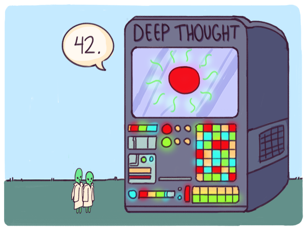
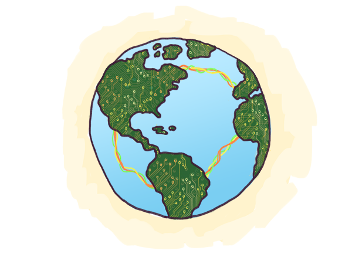

Die Mär der zwei Computer
Bei der Lektüre von Douglas Adams‘ Per Anhalter durch die Galaxis erfahren wir, dass die Erde kein Planet ist, sondern ein gigantischer Supercomputer, der von einem Volk hyperintelligenter Aliens gebaut wurde. Die Erde wurde von einem Vorgänger-Supercomputer namens Deep Thought gestaltet, der wiederum geschaffen wurde, um die endgültige Frage „nach dem Leben, dem Universum und dem ganzen Rest“ zu beantworten. Sehr zum Ärger der Aliens erweist sich die Antwort als das kryptische und unbefriedigende „42“.{kind=link}

Das letzte Essay haben wir mit unserer eigenen endgültigen Frage nach „Ungleichheit, Überwachung und all dem“ abgeschlossen. Die von uns angebotene grundlegende Antwort – „der beste Weg durch etwas hindurch führt durch es hindurch“ – muss genauso ärgerlich, kryptisch und unbefriedigend erscheinen wie die Antwort „42“ von Deep Thought. In Adams Geschichte weist Deep Thought die frustrierten Aliens vorsichtig darauf hin, dass die Antwort möglicherweise deshalb kryptisch schien, weil sie die Frage nie wirklich verstanden hatten. Anschliessend baut Deep Thought die Erde, um das deutlich schwierigere Problem zu lösen, die eigentliche Frage zu ermitteln. Adams absurdes Epos, das erstmals 1978 als Radiosendung ausgestrahlt wurde, ist ein genaues Abbild der gesellschaftlichen Transformation, die zu jener Zeit in Schwung kam. Einen schnellen technologischen Fortschritt durch Rechentechnik begleiteten kryptische und unbefriedigende Antworten auf verworrene und dringend wirkende Fragen zur menschlichen Existenz. Unsere Formulierung der Un-Frage nach „Ungleichheit, Überwachung und all dem“ unterscheidet sich nur geringfügig von der entsprechenden Un-Frage der späten 1970er Jahre: „Kalter Krieg, Globalisierung und all das“. Damals wie heute lautete die frustrierende, aber korrekte Antwort: „Der beste Weg durch etwas hindurch führt durch es hindurch.“ Per Anhalter durch die Galaxis kann als satirisches antimoralisches Märchen über bukolisches Sensibilität, utopische Lösungen und perfekte Antworten gelesen werden. Durch ihre Unzufriedenheit mit der echten „ultimativen Antwort“ gelingt es den Aliens nicht, die wahrlich bemerkenswerte Entwicklung zu erkennen: Sie hatten einen erstaunlich leistungsstarken Computer geschaffen, dem es anschliessend gelungen war, einen noch leistungsstärkeren Nachfolger zu konstruieren. Wie die Aliens sind auch wir oft nicht mit den Antworten auf zeitlose Fragen zufrieden, die wir finden, doch schon dadurch, dass wir diese Fragen nur stellen und versuchen, zu einer Antwort zu gelangen, bewegen wir uns schrittweise in Richtung einer fortschrittlicheren Gesellschaft. Im letzten Essay stellten wir fest, dass dieser Fortschritt sowohl technischer als auch moralischer Natur ist und somit aus der Vergangenheit eine pluralistischere Gesellschaft entstehen lässt. Douglas Adams starb im Jahr 2001, als seine satirischen Visionen, die eine ganze Generation von Technikern inspiriert hatten, gerade begannen, wahr zu werden. So wie Deep Thought den fiktiven Computer „Erde“ entstehen liess, wichen auch die zentralisierten Grossrechner der Industriezeit dem verteilten, vernetzten Computing. In einem fast perfekten Fall des Lebens, das die Kunst imitiert, gaben Forscher von IBM einem leistungsstarken Schach spielenden Supercomputer in den 1990er Jahren zu Ehren von Adams‘ fiktivem Computer den Namen Deep Thought. Die spätere Version Deep Blue sollte der erste Computer sein, der 1997 den amtierenden Schachweltmeister schlagen konnte. Doch der wahrhaftige Nachfolger der IBM-Ära der Informatik war der planetenumspannende verteilte Computer, den wir als Internet bezeichnen.{kind=link}

Der Science-Fiction-Autor Neal Stephenson beschrieb die sich abzeichnende physische Transformation schon im Jahr 1996 in seinem Essay Mother Earth, Motherboard über die Unterwasserkabelverlegungsbranche.1 2004 hatte Kevin Kelly einen neuen Begriff geprägt und eine neue Website eingerichtet, auf der die Idee einer digital integrierten Technologie als einziger, alles einschliessender sozialer Realität diskutiert werden sollte,2 die auf diesem Motherboard entstand:Ich nenne diese Seite The Technium. Dieses Wort habe ich zögerlich gewählt, um den grösseren Wirkungskreis der Technologie zu bezeichnen, der weit über Hardware hinausgeht und Kultur, Recht, soziale Institutionen und intellektuelle Kreationen jeder Art umfasst. Kurz gesagt, das Technium ist alles, was dem menschlichen Geist entspringt. Es schliesst harte Technologien mit ein, aber auch fast alles andere, was Menschen schaffen. Diese erweiterte Erscheinungsform der Technik betrachte ich als ein ganzes System mit einer eigenen Dynamik.Die Metapher der Welt als einer einzigen vernetzten Einheit, die die menschliche Existenz umfasst, ist schon alt und kann in ihrer modernen Form mindestens bis auf Hobbes‘ Leviathan (1651) und Herbert Spencers Der Soziale Organismus (1853) zurückgeführt werden. Neu an dieser spezifischen Form ist, dass es sich um sehr viel mehr handelt als nur um eine Metapher. Die Sicht der Welt als einem einzelnen vernetzten Substrat für Rechenleistung ist mehr als eine poetische Form, die Welt zu würdigen. Es ist eine Möglichkeit, sie zu gestalten und auf sie einzuwirken. Bei vielen Softwareprojekten ist die Vorstellung, „das Netzwerk sei der Computer“ (nach John Gage, einem Informatikpionier bei Sun Microsystems), die einzig praktische Perspektive. Zwar kann auch die Welt vor Zeiten des Internets als auf Papier basierender programmierbarer planetarischer Computer betrachtet werden, doch der planetarische Computer von heute ist einzigartig in der Geschichte: Nahezu jeder, der über eine Internetverbindung verfügt, kann ihn auf globaler Ebene programmieren – nicht nur mächtige Führungspersönlichkeiten, die Organisationen gestalten können. Die Arten der Entwicklung, die in solch einem grossen demokratischen Rahmen möglich sind, wurden rasch immer ausgefeilter. Als sich beispielsweise im November 2014 die Internetgemeinschaft seit mehreren Tagen über das 2013 erschienene sexistische Barbie-Comicbuch Computer Engineer Barbie aufregte, entwickelte die Hackerin Kathleen Tuite (unter Verwendung des kostengünstigen Cloud-Dienstes Heroku) eine Webanwendung, die es jedem ermöglichte, den Text des Buchs neu zu schreiben. Der Hashtag #FeministHackerBarbie wurde sofort viral verbreitet. In Kombination mit der Webanwendung löste er eine Flut von kreativen neu geschriebenen Variationen des Barbie-Buchs aus. Nur ein paar Jahre zuvor wäre aus dem Vorfall nur ein kurzlebiger Sturm der Empörung entstanden, doch nun wurde daraus ein Breaking-Smart-Moment für die gesamte Softwarebranche. Um den bemerkenswerten Charakter dieses Ereignisses zu würdigen, können wir uns Folgendes vor Augen führen: Ein Hashtag ist quasi ein augenblicklich definiertes softes Netzwerk innerhalb des Internets, dessen Möglichkeiten mit denen des Telegrafensystems des gesamten Planeten vor einem Jahrhundert vergleichbar sind. Durch die Verbindung eines Hashtags mit einer passenden Anwendung schuf Tuite faktisch ein ganzes temporäres Verlagsunternehmen mit einem eigenen Vertriebsnetzwerk, und sie brauchte dazu nicht mehrere Jahrzehnte, sondern nur wenige Stunden. Dabei wurde die entstandene negative Stimmung in kreative Energie verwandelt. All diese Möglichkeiten waren innerhalb von nicht mehr als 15 Jahren entstanden – im Vergleich zu dem normalen Ablauf technologischer Veränderungen also praktisch über Nacht. Im Jahr 1999 wurde SETI@home,3 das erste verteilte Computing-Projekt, das die öffentliche Meinung beschäftigte – wenn es auch nur als eine merkwürdige Art und Weise gesehen wurde, um, ungenutzte Rechenleistung der Wissenschaft zu spenden. Bis 2007 kamen durch Facebook, Twitter, YouTube, Wikipedia und Amazon Mechanical Turk4 ausserdem menschliche Kreativität, Kommunikation und Geld mit ins Spiel und genau diese Entwicklungsansätze erschufen das Social Web. Schon 2014 wurden Wahlen durch experimentelle Mechanismen beeinflusst, die in der Kultur der Katzen-Memes entstanden waren.5 Die Cent-Ökonomie von Amazon Mechanical Turk entwickelte sich zu einer Welt, in der mit Bitcoin-Mining ein Vermögen verdient werden kann, Autobesitzer durch Ridesharing einen lukrativen Nebenverdienst erhalten können und pfiffige Künstler auf Kickstarter in gewinnbringende neue Karrieren starten. Auch wenn der alte planetare Computer im Niedergang begriffen ist, wird der neue Computer, den er geboren hat, allmählich erwachsen. In unserer Mär der zwei Computer ist das Elternteil ein vier Jahrhunderte alter Computer, dessen grundlegende Architektur im Nullsummen-Merkantilismus geprägt wurde. Er beruht auf Papier, formalen Qualifikationen und flächendeckenden Gebietsansprüchen, die die ganze Welt mit streng festgelegten Grenzen zerstückeln. Seine Struktur basiert auf hierarchisch angeordneten, containerähnlichen Organisationen von Familien bis hin zu Nationen. In dieser Weltordnung ist kein Platz für eine freie Grenze vorgesehen. Idealerweise hat alles seinen Platz und ist an seinem Platz. Dieser Computer ist auf Stabilität ausgerichtet und Innovation ist eher ein Bug als ein Feature. Diesen planetaren Computer bezeichnen wir als die geografische Welt. Das Kind ist ein junger, ein halbes Jahrhundert alter Computer, dessen grundlegende Architektur während des Kalten Krieges festgelegt wurde. Er beruht auf Software, dem Hacker-Ethos und soften Netzwerken, die den Planeten auf eine immer reichere, nicht exklusive Nicht-Nullsummenart verkabeln. Seine Struktur basiert auf Streams wie Twitter: ein offener, nicht-hierarchischer Informationsfluss aus mehreren sich überschneidenden Netzwerken. In dieser Ordnung der Dinge wird alles von banalen Haushaltsgeräten bis hin zu Raumsonden Teil einer Frontlinie der unablässigen, durch Tüfteleien angetriebenen Innovation. Dieser Computer wurde für schnelle, keiner Ordnung folgende und von glücklichen Zufällen geprägte Entwicklungen geschaffen, bei denen Innovation kein Bug, sondern das Hauptfeature ist. Diesen planetenweiten Computer bezeichnen wir als die vernetzte Welt. Die vernetzte Welt ist nicht neu. Sie ist mindestens so alt wie die ältesten Handelsrouten, auf denen schon immer neben wertvollen Waren auch subversives Gedankengut verbreitet wurde. Neu ist allerdings ihre zunehmende Fähigkeit, die geografische Welt zu dominieren. Die Geschichte von der Software, die die Welt verzehrt, ist auch die Geschichte von Netzwerken, die die Geographie verzehren.
In dieser Geschichte gibt es zwei wichtige Nebenhandlungen. Bei der ersten Nebenhandlung geht es um Bits, die Atome dominieren. Die zweite Nebenhandlung erzählt vom Entstehen einer neuen Kultur der Problemlösung.
[1] Neal Stephensons Essay über die Welt der Kabelverlegung Mother Earth, Mother Board ist auch nach fast 20 Jahren noch immer eine Pflichtlektüre. Sein Gedanke des „Hackertourismus“ sollte von jedem, der sich technologisch bilden möchte, näher verfolgt werden. [2] Kevin Kelly, My Search for the Meaning of Tech, 2004. [3] Es handelt sich um das bekannteste von zahlreichen Projekten, die ungenutzte Rechenzeit auf einzelnen privaten Computern nutzen, um komplexe Aufgaben auszuführen. In diesem Fall ging es darum, Funksignale aus dem Weltall auszuwerten, um Zeichen für ausserirdisches Leben zu erkennen. [4] Reassembling the Social: An introduction to actor-network theory, Bruno Latour, 2007. [5] Kate Miltner, Srsly Phenomenal: An Investigation Into The Appeal Of Lolcats, MSc Dissertation, London School of Economics, 2011. Siehe auch diese Rezension in der Huffington Post.